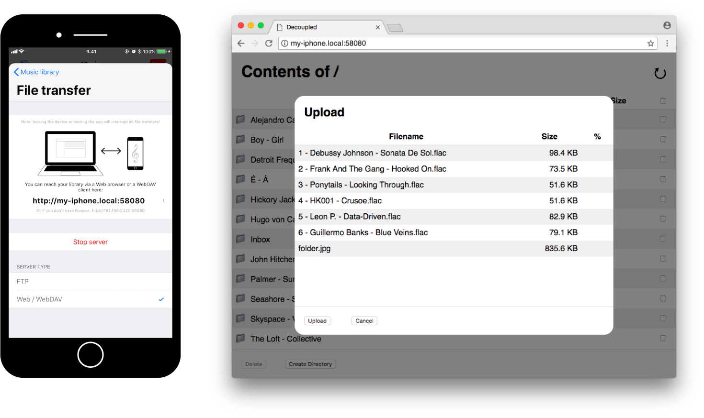

Decoupled
An app for those who take music seriously.
- Do you like music streaming services?
- Do you enjoy companies telling you what you should listen to each week?
- Did you stop buying music years ago?
If you answer with "yes" to any of these questions, Decoupled wasn't made for you. Sorry.
However, if you...
- Still buy and own records
- Have a developed taste and/or a vast music collection
- Listen to music in formats like FLAC, Opus, or Vorbis (Ogg)
Some features
- Playback of a wide range of formats: FLAC, Vorbis (Ogg), Opus, Apple Lossless, MP3, AAC, WAV.
- Gapless playback
- 10-band equalizer
- Music sync through USB, via iTunes File Sharing
- Music sync without iTunes via FTP, WebDAV, or a simple Web browser!
- Hardware codec utilization for longer battery life.
How to ... ?
How to get music into the app?
Well, you have several options:
- You can use iTunes File Sharing through WiFi or USB (which will probably be the fastest, so I'd recommend using that for transferring huge amounts of files)
- If you don't/can't use iTunes, but have a Mac, you can just use AirDrop from Finder.
- If you don't have a Mac, you can use an FTP or WebDAV client, or even a Web browser like Google Chrome.
- You can of course import files from other applications on your phone, like Safari.
How does iTunes File Sharing work?
Apple has an excellent tutorial on iTunes File Sharing.
There's one important thing though: due to limitations of the iOS platform, when transferring files via iTunes File Sharing, the newly transferred items will appear only when you tap the refresh button at the top, or the next time the app is launched.
How does FTP/WebDAV/Web transfer work?
First you should open the in-app file manager ("Files"), and from there open the "Transfer" page.
Now, you should choose whether you want to use an FTP client (e.g. FileZilla on macOS or Total Commander on Windows), or a WebDAV client (e.g. Cyberduck both for macOS and Windows) for transferring files. If you choose WebDAV, you can use a simple Web browser too, like Google Chrome.
Make sure you're connected to the same WiFi network as your computer, and press "Start server". This fires up a local FTP/WebDAV server on your phone, which you can access from your computer.
Once the server is running, you should take the displayed URL, and enter it into your FTP/WebDAV client or Web browser:

I recommend using Google Chrome, because that's the only Web browser that supports drag'n'drop for folders. Other browsers like Safari won't be able to import all the files in a directory tree.
Neither the WebDAV, nor the FTP server is password-protected. The FTP user is anonymous.
If you're not using macOS, you might not be able to use the user-friendly http://my-iphone.local URL, unless you have Bonjour or some other Multicast DNS client avilable (iTunes for Windows comes with a Multicast DNS client). In this case you should use the plain IP URL, displayed below the user-friendly one, e.g. http://192.168.0.220:58080
How to add artwork to an album?
Put a file called "folder.jpg", "artwork.jpg", "album_art.jpg", "cover.jpg" or "front.jpg" next to the music files, and it will be used as the artwork for the given album. (PNG and GIF files are also supported.)
Artworks embedded in ID3 tags are also supported for MP3 files.
How to access the playback queue?
Swipe up on the playback screen.
How do I play content from the built-in iOS music library?
Decoupled was made to be a standalone application, and not a companion to the iOS music app. Therefore, playing music from the iOS music library is not possible.
Missing features?
Decoupled is a hobby project, but if you have a feature idea that's currently missing from the app, and doesn't go against its philosophy, drop a mail to features at decoupled.app and I'll consider implementing it.
Privacy policy
Neither this site, nor the Decoupled application collects any user data.
No cookies, no analytics, no tracking, no A/B tests, no advertisements. The app doesn't even have built-in crash reporting.